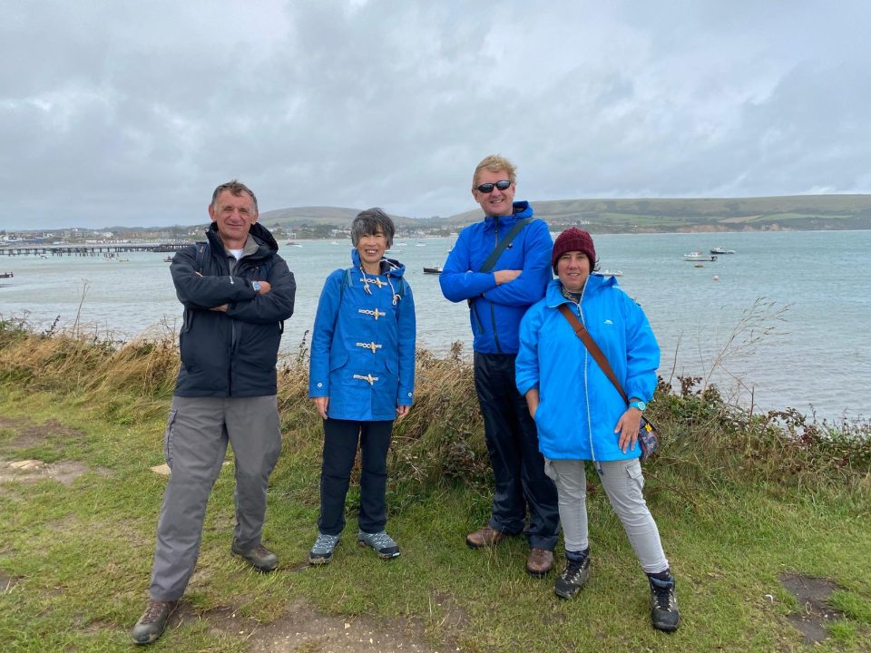
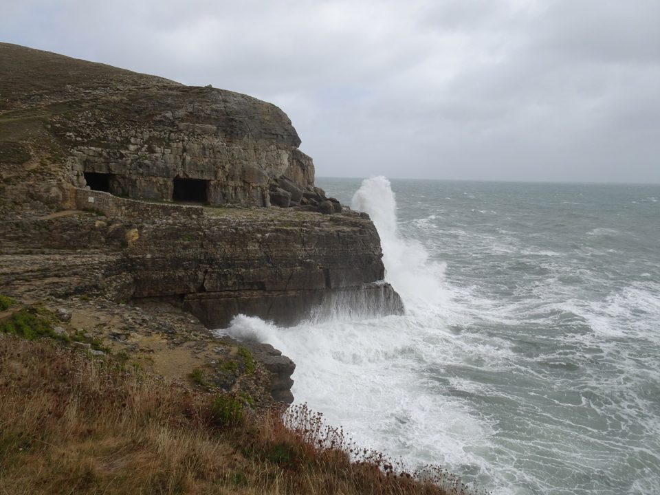
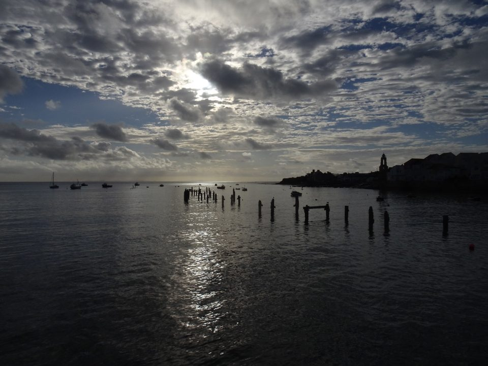
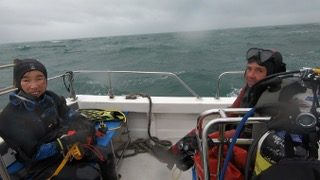
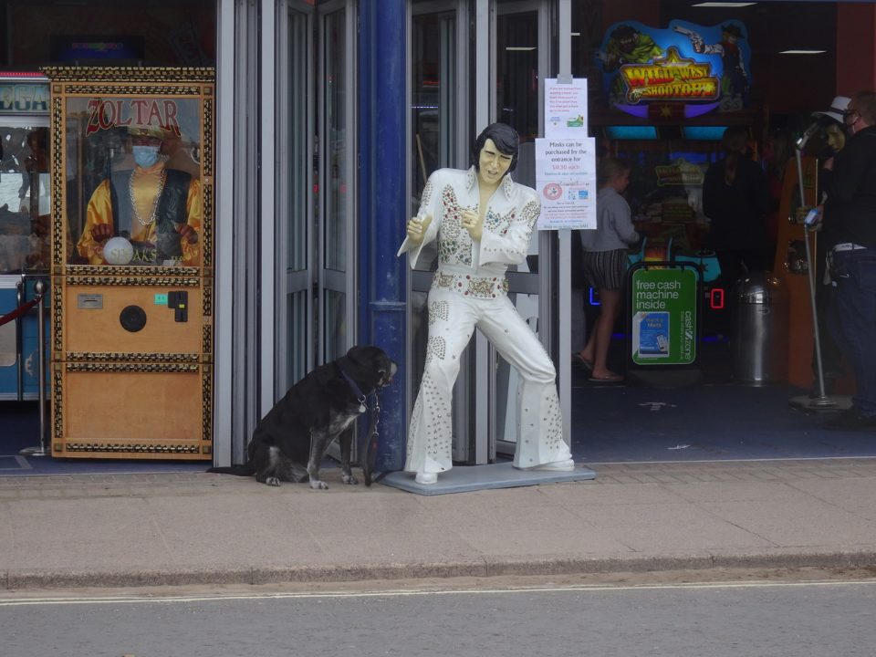

Swanage, 25th-27th August 2020
With meticulous forecasting, our Swanage trip coincided with the worst August storm in living memory. We were joined by Steve W, an ex-club member and Howard, a friend of the club and our link to the Scuba Trust.
Our first day, in true dive trip style, was spent walking along the Dorset clifftops leaning into 60mph winds. A further walk in the afternoon included a stint of abseiling down a muddy slope to the beach and shopping for nick-knacks that were doomed to join a large existing collection of nick-knacks.


Day two was exceptionally successful from the diving perspective. We had arranged a dive at 3:30, which would follow a leisurely walk in the morning to Old Harry Rock. Due to a shortcoming in communication, we discovered, after queueing 20 mins for pasties, and upon arriving at the head of the queue, that we had to be on the pier NOW!!! Stomachs rumbling, we scrambled to load the boat, ready to head out to uncertain visibility at Peveril Ledges.
The dive did not disappoint. As expected, the visibility was about a metre. With startled wildlife caught in our torch beams as we passed, we narrowly avoided hitting the ledges. Despite the gloom, we spotted an undulate ray and some decorator crabs.
The Second dive, on the Valentine Tanks, was very good. The visibility was much better and the tanks full of wildlife. The tanks housed some huge conger eels, lobsters, large edible and spider crabs, lumpsuckers, pipefish and a lot of bib. A very memorable dive.
https://player.vimeo.com/video/452481002
Our next day’s diving started with perfect weather and a drift dive below Old Harry. The visibility on this dive wasn’t what we had hoped, but we saw a gurnard, a ray and lots of ordnance as this area had previously been used as a firing range.


During the long surface interval, we made up for the previous day’s missing pasties then cowered in our cars from the torrential rain. Finally, we set off for the last dive of the trip: Peveril Ledges once more. This time, the visibility had improved and we spotted an undulate ray, dogfish, a baby conger eel and a shoal of bib. During the dive, the wind had picked up, making the sea rough, so it was good to be back on the boat.

Reported by Trevor, Akiko, Sarah B and Boggie